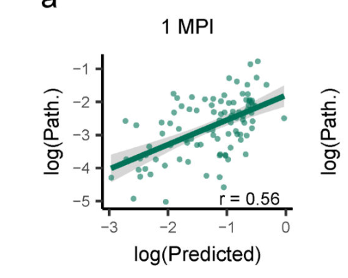
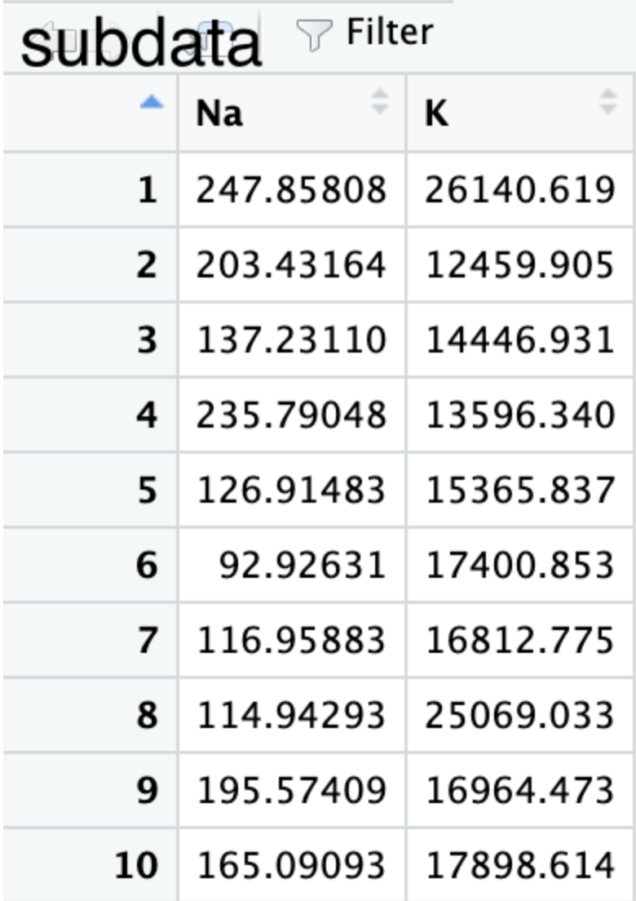
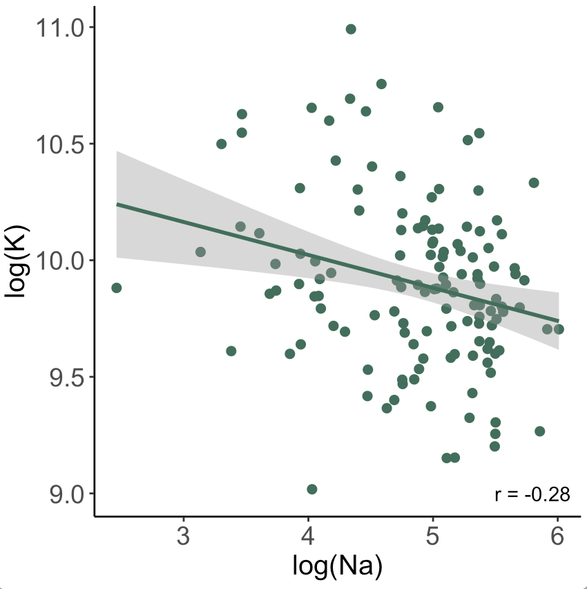

前几天看到群里有人问如何画一张类似下图的、带拟合线与误差的相关性图，这里找点数据来演示一下怎么画。
 找了点数字画了个例子，假设数据读进来是这样的两列：

绘图的部分我用了这些
leg <- theme(title=element_text(size=15),
axis.text.x=element_text(size=14),
axis.text.y=element_text(size=14),
legend.text=element_text(size=14))
label_text <- paste0("r = ", round(cor(subdata$Na,subdata$K),2))
library(ggplot2)
ggplot(subdata, aes(x = log(Na), y = log(K))) +
geom_point(size = 2,color = "#31705a") +
stat_smooth(method = "lm", color = "#31705a")+
theme_classic() +
annotate("text", x=5.8, y=9, label= label_text) +
leg
以上代码画出来的图如下： 
其中各部分的解释如下
leg <- theme(title=element_text(size=15),
axis.text.x=element_text(size=14),
axis.text.y=element_text(size=14),
legend.text=element_text(size=14)) # 用于指定字体大小等，可以先忽略
label_text <- paste0("r = ", round(cor(subdata$Na,subdata$K),2)) # 用于计算相关系数r的值，并处理成标在图上的「r = xxx」的文本
library(ggplot2) # 用ggplot2包画图
ggplot(subdata, aes(x = log(Na), y = log(K))) + #指定画图的数据subdata，在aes(x = ,y = )中指定横纵坐标轴
geom_point(size = 2,color = "#31705a") + #绘制散点部分，点的大小为2，颜色为浅绿色
stat_smooth(method = "lm", color = "#31705a")+ #绘制拟合线部分，method = "lm" 使用线性拟合，颜色同前
theme_classic() + # 使用ggplot的classic画图主题，是个只显示横纵坐标轴的主题
annotate("text", x=5.8, y=9, label= label_text) + # 添加上文字标注，类型是"text"，位置在x=5.8，y=9
leg # 添加之前指定的字体大小部分，不关键